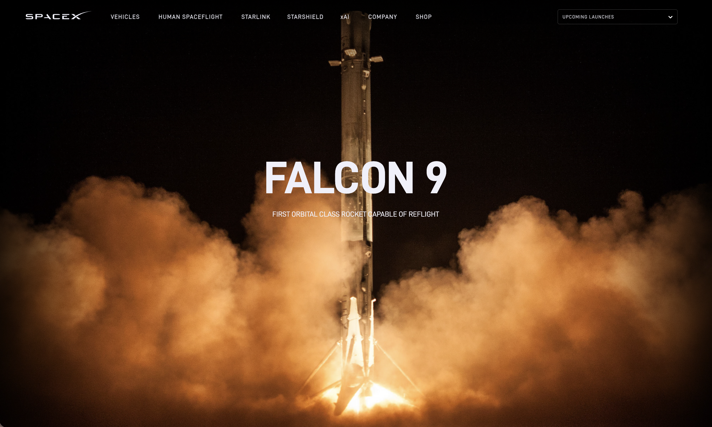

Collected Falcon 9 launch dates, sites, payloads, and outcomes from the SpaceX REST API.
Scraped Wikipedia to capture booster versions and launch history details.
Merged both sources into one cleaned dataset for analysis and modeling.
Dropdown — choose site or all sites
Slider — filter payload mass range
Pie Chart — success count by site
Scatter Plot — payload mass vs. landing outcome
Dash callbacks refresh the charts whenever filters change.
Result: Logistic Regression, SVM, KNN, and XGBoost tied on test accuracy at 83.33%. XGBoost is the preferred model because it also achieved the strongest cross-validation score at 86.19%.